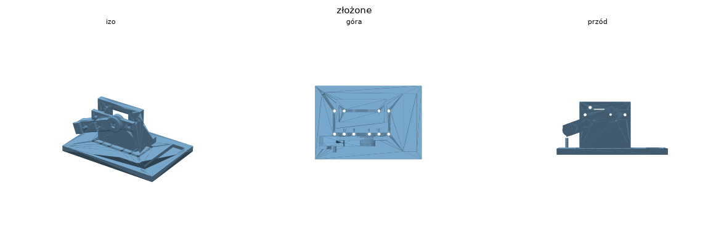
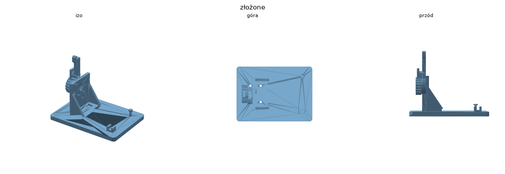

Klikacz SG90 (serwo, 1 pozycja)Prosty stabilny klikacz: serwo SG90 + róg 25T + dźwignia-kleszcze. Gumka wraca. Klika w JEDEN punkt (regulacja ręczna slotem M3).
Klikacz 28BYJ-48 (krokowy + krzywka, 1 pozycja)Silnik krokowy 28BYJ-48 obraca ekscentryczną krzywkę; popychacz z gumką wraca. Pokrętło = klik ręczny. Klika w JEDEN punkt.